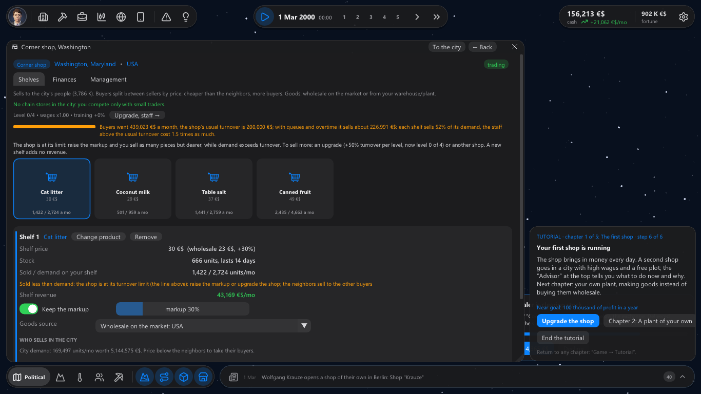
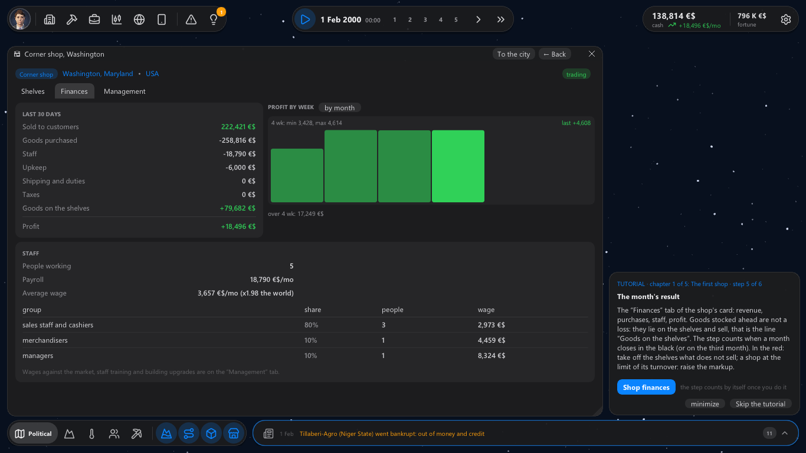
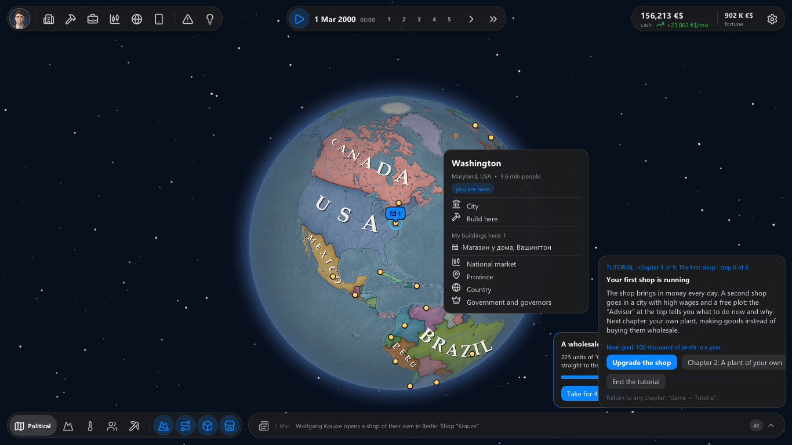

We sat a "newcomer" down at the game — someone who has never played an economic strategy — and watched where they
would quit. They quit at minute nine: the shop's first month closed deep in the red, cards about wars in faraway
countries kept popping up, and the play button ran time at an hour a second. 0.13 fixes that.

The first 15 minutes
✚ An honest first month. Goods the shop stocked ahead and still has on its shelves are not a loss. The
finances show them as "Goods on the shelves", and the first month now closes in the black when it really is.
✚ Play means play. The ▶ button and space resume at the last speed you picked (a day a second at first),
not an hour a second.
✚ A near goal. "100 thousand of profit in a year", "a second building", "a million in the cash" — in your
card and at the end of the first chapter. The tutorial offers a plant of your own when you can afford it, and an
upgrade of the shop before that.
✚ One piece of advice, not two. The tutorial and the advisor no longer argue about the markup.
✚ Less noise. Tensions that already existed in 2000 are not news; a regime change, an ultimatum or a war in a
faraway country no longer pauses the game and goes to the feed.
A weekly rhythm
✚ Weekly results. Every building shows its profit by week: a "by week / by month" switch above the chart in
its finances, and "/wk" in the top bar is a real week.
✚ The world lives every day. Harvest failures, war rumors, sanctions and revolutions come on different days
of the month, not all on the first.
✚ Rivals answer sooner. A chain that loses buyers to your shop starts cutting its prices within a week.

A quick city menu
A click on the map opens the city's menu, like a settlement in Mount & Blade 2: the city itself, "Build here", your
buildings there with their troubles, the country's market, the province, the country and its government.

Saves of 0.12 load in 0.13.
If you tried the game and stopped — we would really like to know where. One line in the comments is enough.
And tell us which you'd rather play: a long sandbox over generations, or a half-hour match where you have to ruin
your rivals?